Home
Home Contact
Contact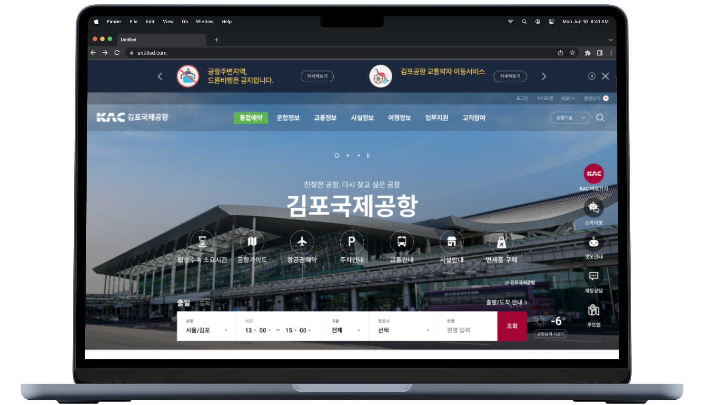
- 개요
- 한국공항공사 통합 디지털 서비스 운영·고도화
-
Duration2023.01 - 2025.12
-
Type반응형 웹, 모바일 앱
-
Role운영 유지보수 - UI 개선 요청 사항 및 각종 그래픽 이미지 작업 100% 참여
한국공항공사 통합 디지털 서비스 운영·고도화 프로젝트에 참여하여, 웹·앱 전반의 UI/UX 개선과 시각 디자인 작업을 수행했다.
운영 환경에서 발생하는 요구사항을 반영해 화면 구조와 기능을 단계적으로 고도화했으며, 웹접근성 인증을 3년 연속 유지해야 하는 조건을 고려해 접근성 가이드에 부합하는 UI 설계와 배너·그래픽 이미지 제작을 병행했다.
Go to site
운영 환경에서 발생하는 요구사항을 반영해 화면 구조와 기능을 단계적으로 고도화했으며, 웹접근성 인증을 3년 연속 유지해야 하는 조건을 고려해 접근성 가이드에 부합하는 UI 설계와 배너·그래픽 이미지 제작을 병행했다.
15개 공항 및 유관기관 통합 UI 운영·관리
15개 공항 홈페이지와 모바일 앱, 직원훈련원 및 향우회 등 유관기관을 포함한 통합 디지털 서비스 전반의 UI를 운영·관리했다.다양한 조직과 플랫폼에 분산된 화면 구조를 일관된 기준으로 정비하고, 서비스 간 사용자 경험의 일관성을 유지하는 데 집중했다.
지속적인 운영 환경 속에서 디자인 품질을 관리하고, 요구사항에 따른 UI 개선 및 고도화 작업을 병행했다.
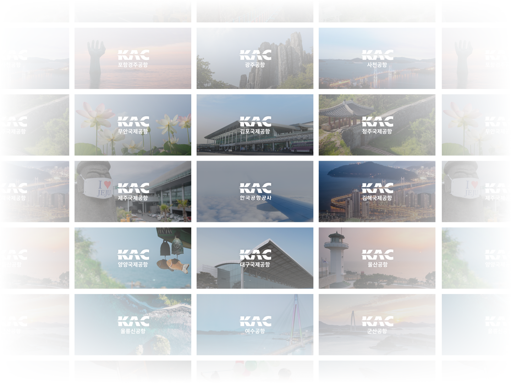
공공 웹접근성 기준 3년 연속 충족
화면 구조 변경, 배너 교체, 기능 추가 등 지속적인 운영 및 고도화를 위한 업데이트 환경에서도 접근성 가이드를 준수하며 UI를 관리하여 웹접근성 인증을 3년 연속 유지했다.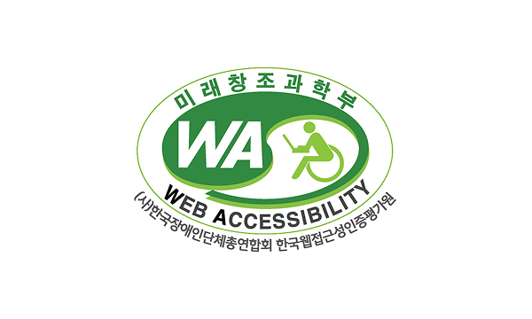
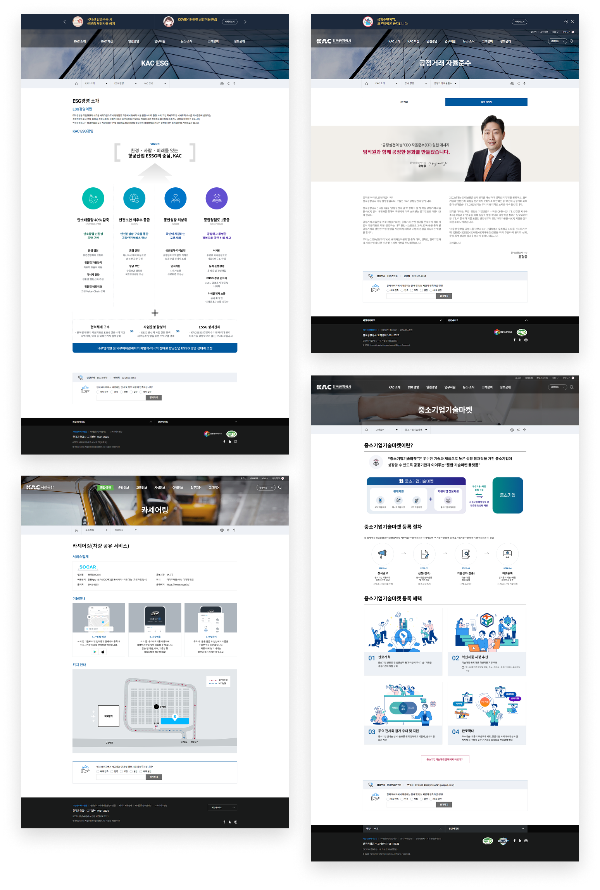
2024 스마트공항 앱 메인 리뉴얼 및 통합 UI 고도화
2024년 스마트공항 앱 메인 페이지를 리뉴얼하고, 웹·앱 공통 UI를 고도화했다.기존 사용자 이용 통계를 분석해 가장 많이 방문하는 페이지와 핵심 기능을 중심으로 메인 콘텐츠를 재구성하고, 정보 접근성을 강화하는 방향으로 레이아웃을 재정비했다.
또한 웹과 앱에 공통 적용되는 UI 요소를 체계화하여 플랫폼 간 일관된 사용자 경험을 구축했다.
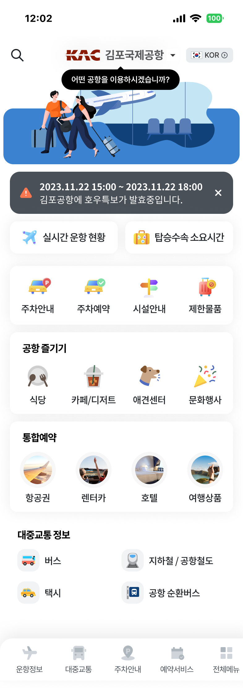
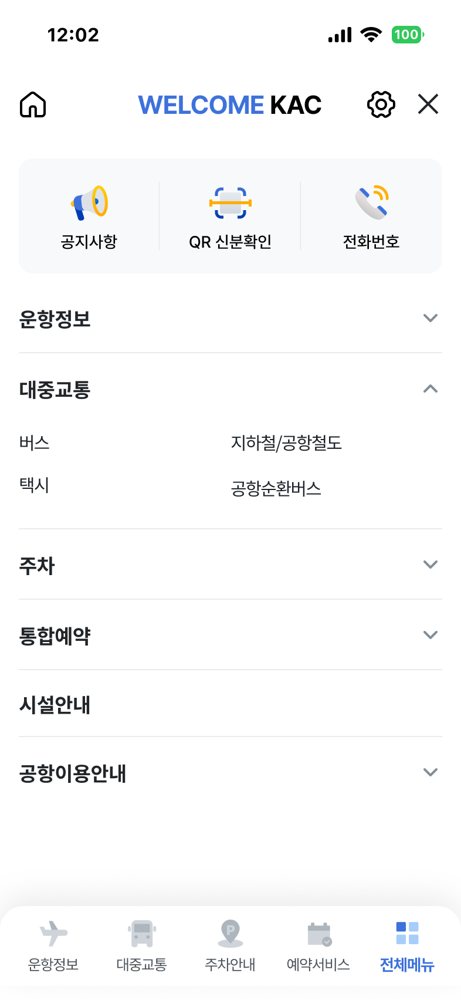
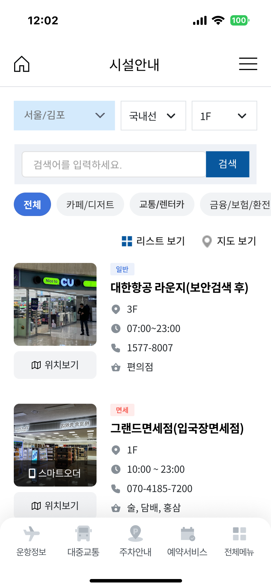
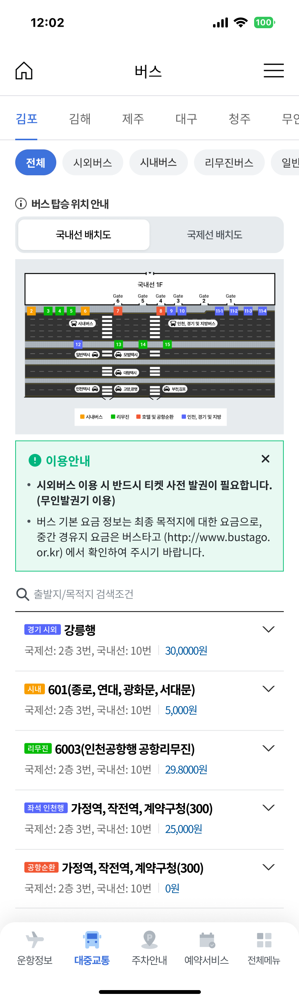
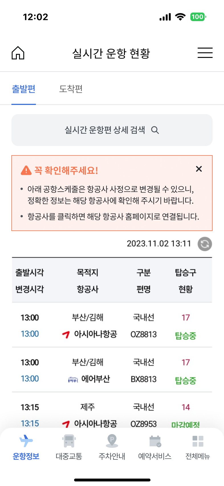
배너, 팝업, SNS 콘텐츠 등 운영 그래픽 요소
운영 과정에서 발생하는 다양한 캠페인과 공지사항에 맞춰 배너, 팝업, SNS용 이미지 등 그래픽 요소 전반을 제작했다.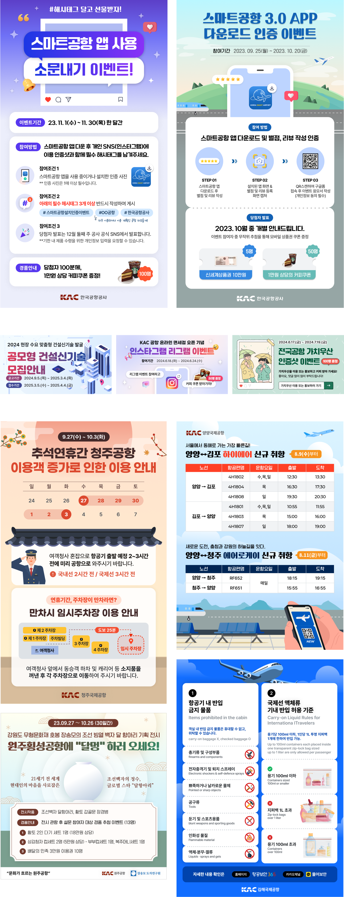
디지털을 넘어 현장까지 확장된 UI/Graphic 운영
웹·앱 기반 디지털 서비스뿐 아니라, 공항 키오스크 화면, 입간판 배너, 포스터, 배부용 인쇄물 등 오프라인 매체 디자인까지 함께 수행했다.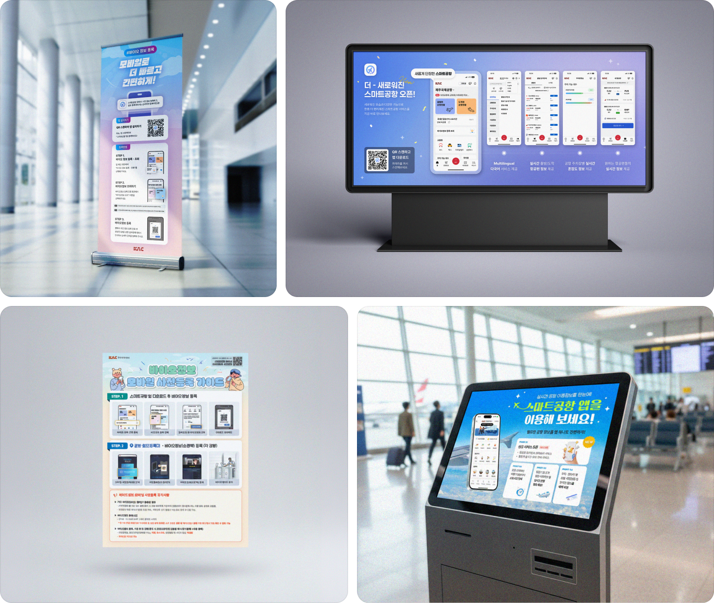